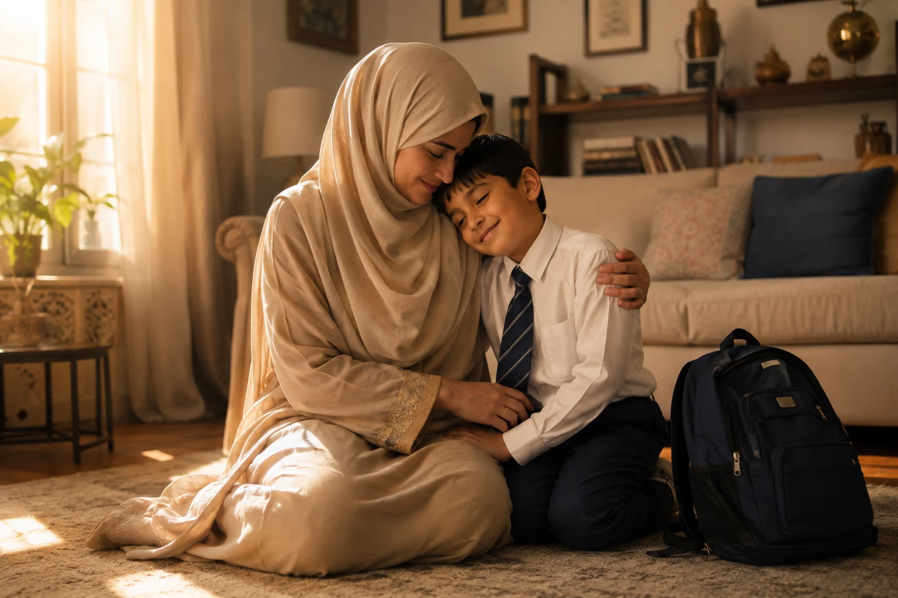

There is no heartbreak quite like watching your child come home from school with tears in their eyes, saying, "They made fun of me today," or "They pushed me." As Muslim parents in the West, our children often face a double burden: regular school bullying, and sometimes, bullying specifically targeting their Islamic identity (hijab, halal food, or prayer). In this comprehensive guide, we will explore how to handle bullying at school using the beautiful, balanced framework of Islam — empowering your child to be strong, dignified, and protected by Allah.
📖 In This Complete Guide, You'll Learn:
- What Islam strictly says about bullying and oppression (Zulm)
- 5 clear signs your child is being bullied (even if they don't tell you)
- The 3-step Islamic response to teach your child (Sabr, Speaking Up, Seeking Help)
- How to role-play and build unshakeable confidence at home
- When and how to formally involve the school administration
- Powerful Duas from the Sunnah to protect your child's heart
🔑 Key Takeaways
- Bullying is a major sin (Zulm) in Islam; your child is never at fault for being oppressed.
- Teach your child the "Stop, Walk, Talk" method aligned with Islamic dignity.
- Build their confidence by connecting their self-worth to Allah, not peers.
- Document everything before approaching the school; be firm but professional.
- Make Duas for protection a daily, non-negotiable family habit.

What Islam Says About Bullying (The Severity of Zulm)
Before we discuss strategies, your child needs to know one fundamental truth: In Islam, the bully is the one in the wrong, not the victim. Bullying is a form of Zulm (oppression/injustice), and Allah has forbidden it for Himself and for us.
The Prophet (PBUH) said that Allah said: "O My servants, I have forbidden oppression for Myself and have made it forbidden amongst you, so do not oppress one another."
— Sahih Muslim 2577Furthermore, the Prophet (PBUH) defined a true Muslim as someone who does not harm others with their words or actions: "A Muslim is the one from whose tongue and hands the Muslims are safe." (Bukhari 10). Teach your child that a bully's behavior reflects their own weak character and lack of Taqwa (God-consciousness), not your child's worth.
5 Signs Your Child is Being Bullied
Children, especially boys, often hide bullying because they feel ashamed or fear it will get worse if they tell. Watch out for these subtle signs:
- Sudden Reluctance to Go to School: Faking stomachaches or headaches every morning.
- Changes in Mood or Sleep: Unexplained irritability, crying spells, or nightmares.
- Lost or Damaged Belongings: Coming home with torn clothes, missing lunch, or broken pencils.
- Withdrawing from Friends: Suddenly not wanting to see friends they used to love.
- Drop in Academic Performance: Losing focus in class because they are constantly on edge.
Instead of asking "Did anyone bully you today?" (which often gets a "No"), ask open-ended questions like: "Who did you sit with at lunch?" or "What was the best and worst part of your day?"
The 3-Step Islamic Response to Teach Your Child
We must teach our children a balanced response — neither passive doormats nor aggressive aggressors. Teach them this 3-step method:
Step 1: Sabr and Dignity (Walk Away)
The first response to verbal bullying is to not give the bully the reaction they want. Teach your child to look the bully in the eye, say nothing, and walk away calmly. This is the Sunnah of the Prophet (PBUH), who often ignored the insults of the Quraysh.
Step 2: Speak Up Firmly (Set Boundaries)
If the bully persists, Islam allows us to defend our honor verbally. Teach your child to say in a loud, firm voice: "Stop it. I don't like what you are doing, and it's not funny." Bullies look for easy targets; a firm boundary often stops them.
Step 3: Seek Help (Tawakkul + Action)
If the bullying continues or becomes physical, the child MUST tell an adult. The Prophet (PBUH) said: "Help your brother, whether he is an oppressor or is oppressed." When asked how to help an oppressor, he replied: "By preventing him from oppressing others." (Bukhari 2444). Telling a teacher is "helping the bully" stop their sin.
How to Build Unshakeable Confidence at Home
A confident child is rarely bullied. Here is how to build an Islamic armor of confidence:
1. Anchor Their Identity in Allah
When kids are made fun of for being Muslim (e.g., "Your lunch smells weird" or "Why do you wear that cloth?"), they need to feel proud, not ashamed. Tell them: "We are different because Allah chose us to be His servants. The Prophet (PBUH) was mocked too, and Allah honored him above all." For more strategies, see our guide on building confidence in Muslim children.
2. Role-Play Scenarios
Practice at home. You play the bully, and let them practice saying "Stop!" firmly. Practice walking away. Muscle memory works in social situations too.
3. Enroll Them in Martial Arts
Islam encourages physical strength. The Prophet (PBUH) said: "The strong believer is better and more beloved to Allah than the weak believer." (Muslim 2664). Martial arts (Karate, Taekwondo, Jiu-Jitsu) teach discipline, respect, and the quiet confidence that deters bullies.
When and How to Involve the School
You are your child's biggest advocate. If the bullying is physical, involves hate speech, or is severely impacting their mental health, you must act.
Before the Meeting:
- Document Everything: Write down dates, times, locations, what happened, and who witnessed it.
- Save Evidence: If it's cyberbullying, take screenshots.
During the Meeting:
- Stay Calm but Firm: Do not attack the teacher. Say: "I am here because my child's safety and education are being compromised. Here is the documentation. What is the school's anti-bullying policy, and how will you enforce it?"
- Follow Up in Writing: After the meeting, send an email summarizing what was agreed upon. This creates a paper trail.
If the bullying is specifically about their religion (hijab, beard, prayer), involve the school's diversity officer or principal immediately. Frame it as a violation of the school's anti-discrimination policy.
Powerful Duas for Protection and Strength
While we take practical steps, our ultimate protector is Allah. Teach your child these Duas. For a complete list of protective supplications, refer to our article on 7 Powerful Duas for Protection of Children.
"Hasbunallahu wa ni'mal wakeel."
"Allah is sufficient for us, and He is the best disposer of affairs."
— Surah Al-Imran 3:173"Allahumma inni a'udhu bika minal-hammi wal-hazan..."
"O Allah, I seek refuge in You from anxiety and sorrow, weakness and laziness..."
— Sahih Bukhari 6369Remind them of the story in the Quran (Surah Al-Buruj) of the young boy who stood up to the tyrant king because his Iman was stronger than his fear. Allah is always with those who stand up for what is right.
Frequently Asked Questions
🛡️ You Are Your Child's Safe Haven
When the world feels harsh, your home must be their sanctuary. Listen to them, believe them, and fight for them. Together, with the help of Allah, you can raise a child who is not only protected but also deeply compassionate and strong.
Has your child ever faced bullying? How did you handle it? Share your experience to help other parents!
Final Thoughts
Bullying is a painful reality, but it is also an opportunity to teach our children resilience, Tawakkul (trust in Allah), and the true meaning of Izzah (honor). By combining practical strategies with the timeless wisdom of the Quran and Sunnah, we can equip our children to navigate these challenges with their heads held high and their hearts connected to their Creator. May Allah protect our children from every harm, visible and invisible, and make them beacons of light and justice. Ameen.